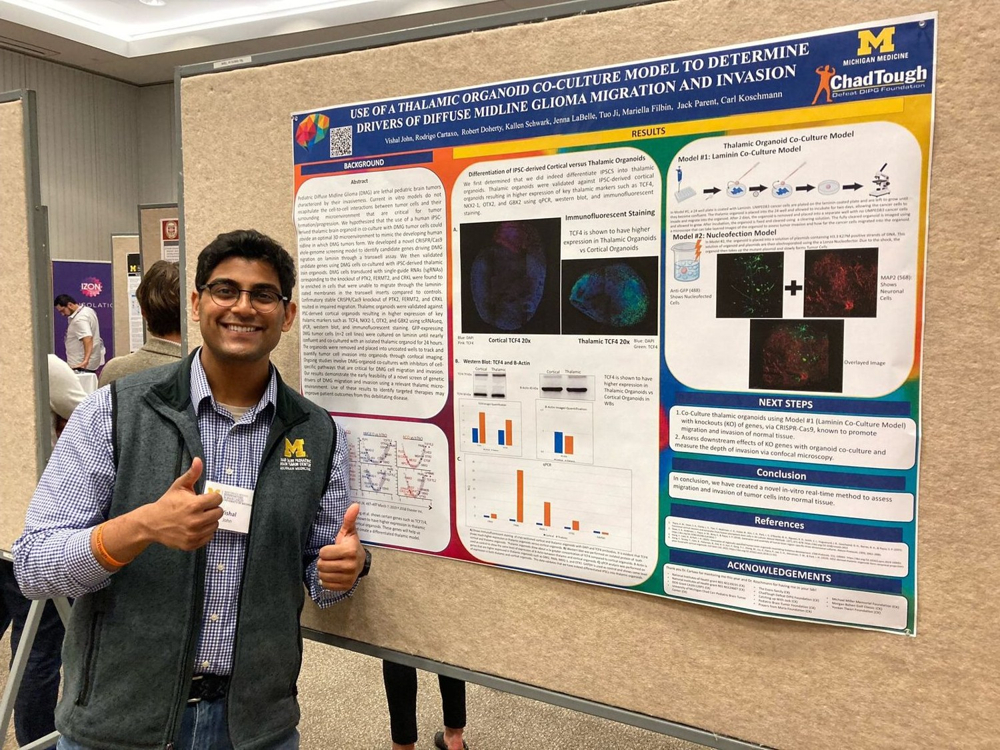
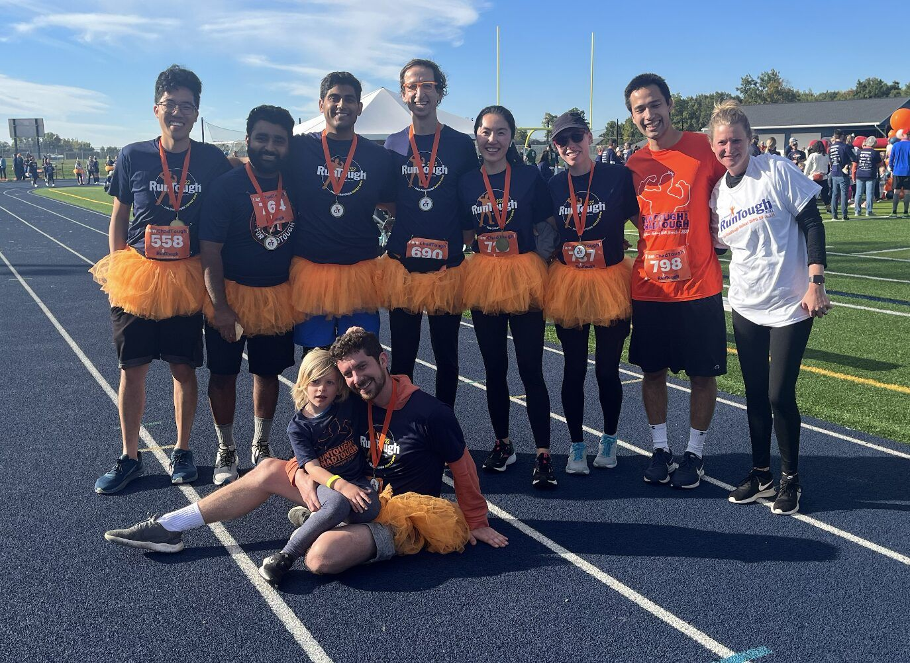
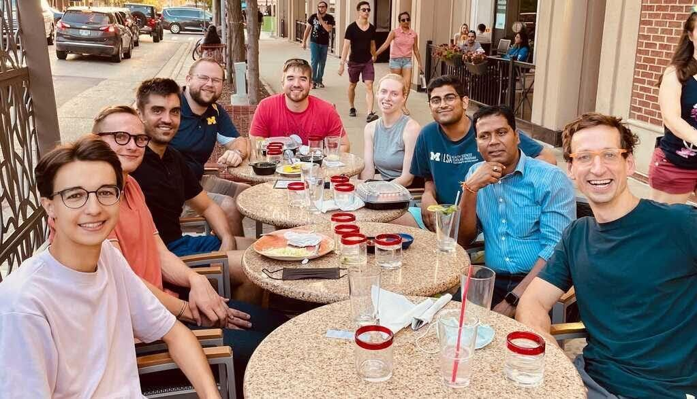
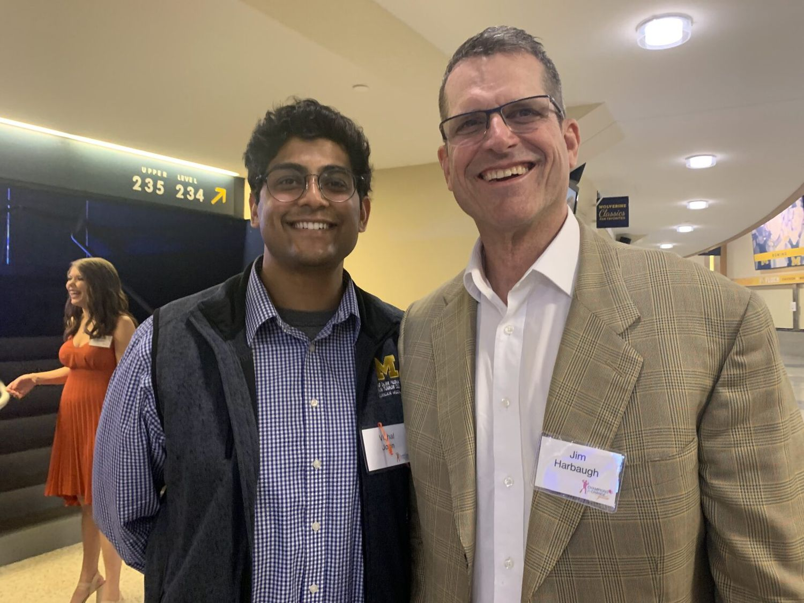
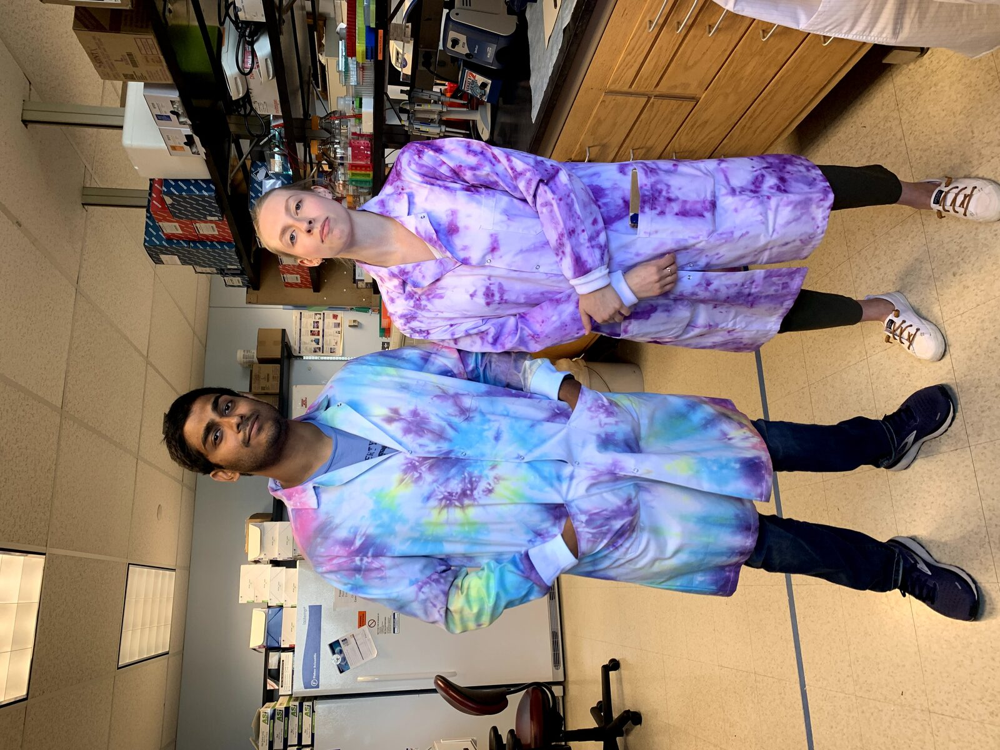

Koschmann Lab for Pediatric Brain Cancer
Clinical Research Technician · Michigan Medicine, Pediatric Hematology/Oncology · 2021 – 2023
What is the Koschmann Lab
The Koschmann lab studies the molecular mechanisms by which mutations in pediatric Diffuse Midline Glioma (DMG) and Diffuse Intrinsic Pontine Glioma (DIPG) can be therapeutically targeted. The Koschmann Lab’s work in precision medicine pushes the boundaries of targeted therapies and precision diagnostics for children diagnosed with these brain tumors. Through highly collaborative basic, translational, and clinical research, the Koschmann Lab strives towards improving outcomes and providing hope for children fighting these devastating diseases.
At the Koschmann Lab, I worked as a Clinical Research Technician. My work ranged from hands-on analysis of cerebrospinal fluid (CSF), blood, and tissue samples from patients, using ddPCR, to monitor cancer progression during experimental clinical trials. Beyond processing and analysis, I was deeply involved in the logistical side of research, ensuring the seamless collection and storage of vital samples like brain tissue, spinal fluid, and blood plasma from pediatric patients, particularly during autopsies.
Recognizing the importance of efficient sample tracking, I integrated a barcoding and computer tracking system to manage the influx of pediatric brain tissue and liquid samples. I helped develop a novel method for simulating the microenvironment of invasive cancer cells in the brain under the mentorship of Dr. Rodrigo Cartaxo. This method employs stem cell-derived thalamic and cortical organoids co-cultured with cancer cells. My contributions in this area led to my presenting a first-authored poster at the prestigious BioInnovation in Brain Cancer Symposium.
Furthering the lab's academic presence, I took on a leading role in publishing a co-first author review focusing on liquid biopsy techniques in the fight against pediatric brain tumors. Additionally, I contributed to five other peer-reviewed publications. My expertise also found expression in mentoring, as I trained lab members in a variety of techniques, including ddPCR, qPCR, western blotting, cell culture methods, and more.
$1M Donation To Koschmann Lab
Some Pictures from Koschmann Lab





Drag to spin · click a photo to enlarge